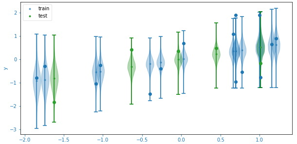

Linear regression is probably the least sexy machine learning model and yet it’s a veritable playground for learning. I think every data scientist has used fit at least once and yet how many know how to get per prediction estimates of uncertainty? I didn’t before I had to do a code review for the stats engine behind Explain Data in Tableau. Now I do and, to record my notes for future me and others, to note the limitations, here we go!

from sklearn.linear_model import LinearRegression
model = LinearRegression().fit(X_train, y_train)
plt.plot(x_train[:, 0], y_train, 'o')
plt.plot(x_train[:, 0], model.predict(X_train), '.k', label='train')
plt.plot(x_test[:, 0], y_test, 'o')
plt.plot(x_train[:, 0], model.predict(X_test), '.k', label='test')While the rest of the world is racing after neural networks (that can be defined just as succinctly), learning about back prop and minimising non-convex problems, these notes will deal only with convex minimisation that furthermore can be solved via matrix manipulations. They’ll cover:
- the statistical assumptions behind ordinary least squares (OLS)
- the link with Bayesian linear regression and ridge regression
- a numerically stable QR decomposition solution
- reusing that decomposition to estimate coefficient uncertainty
Formalising the Problem
Suppose we have a dataset with \(p\) features and \(n\) examples, \(\pmb{X} \in \Bbb{R}^{n \times p}\), and a single target, \(\pmb{y} \in \Bbb{R}^n\) . The goal is the find a model of the form \(\pmb{y} = \pmb{X\beta}\) with minimum reconstruction error, that is,
\[ \pmb{\hat \beta} = \textrm{argmin}_\beta ||\pmb{y} - \pmb{X\beta}||_2 \]
An intercept is modelled as an a constant unit “feature”.
This is equivalent to assuming that the generating process (per sample) is
\[ y \sim N(\pmb{\beta x}, \sigma^2) = {1 \over \sigma \sqrt{2\pi}} e^{-{1\over 2} \left({y - \pmb{\beta x} \over \sigma} \right)^2} \]
e.g. the noise is normal. To solve the statistical version, we minimise the log-likelihood which gives us back the sum of squared errors, ignoring extra terms involving \(\sigma\) that are usually dropped by setting \(\sigma=1\).
If the number of features is large or the dataset is small, we can add regularisation: an \(L_1\) penalty gives a Lasso model with sparsity in coefficients; with an \(L_2\) penalty, we have a ridge regression which can be solved as easily as OLS. To solve a Lasso model, gradient descent is often used with line search.
The model is now specified by the minimisation:
\[ \begin{aligned} \hat \beta = \textrm{argmin}_\beta {1 \over 2\sigma^2} \Big( \Big.(\pmb{y} &- \pmb{X} \pmb{\beta})^T(\pmb{y} - \pmb{X}\pmb{\beta}) \\ & \Big.+ \lambda \pmb{\beta}^T \pmb{\beta} \Big) + \log\sqrt{2\pi}\sigma \end{aligned} \]
In OLS \(\sigma\) is usually set to 1. The last term can be seen as a regulariser: the first term will pull \(\sigma\) up to counter the error term.
The Bayesian regression assumes a prior on the coefficients \(\pmb{\beta} \sim N(0, \tau^2)\), and, for simplicity, an uninformative prior on \(\sigma\). The posterior is then the product of the likelihood with this prior and the MAP estimate, or maximum a posteriori probability, is again found by minimising the log-posterior. This reduces to the same form as ridge regression with \(\lambda = \sigma^2 /\tau^2\).
QR Decomposition
The minimum of an unconstrained function can be found by setting the first derivative(s) to zero:
\[ \begin{aligned} {d \over d{\pmb{\beta}}} \left( (\pmb{y} - \pmb{X} \pmb{\beta})^T(\pmb{y} - \pmb{X}\pmb{\beta}) + \lambda \pmb{\beta}^T \pmb{\beta} \right) &= 0 \\ {d \over d{\pmb{\beta}}}\left(\pmb{\beta}^T \pmb{X}^T \pmb{X} \pmb{\beta} - 2\pmb{\beta}^T \pmb{X}^T \pmb{y} + \lambda \pmb{\beta}^T \pmb{\beta}\right) &= 0\\ 2\pmb{X}^T \pmb{X} \pmb{\beta} -2\pmb{X}^T \pmb{y} + 2\lambda \pmb{\beta} &=0 \end{aligned} \]
so that
\[ \pmb{\hat \beta} = (\pmb{X}^T \pmb{X} + \lambda \pmb{I})^{-1}\pmb{X}^T \pmb{y} \]
Consider the QR decomposition of \(\pmb{X}\) first in the \(\lambda = 0\) limit: \(\pmb{X} = \pmb{QR}\) where \(\pmb{Q} \in \Bbb{R}^{n \times p}\) is an orthonormal matrix, that is, \(\pmb{Q}^T\pmb{Q} = \pmb{I}\) (assuming \(n\ge p\)), and \(\pmb{R}\in \Bbb{R}^{p \times p}\) is upper triangular. The solution simplifies to \(\pmb{\hat \beta} = \pmb{R}^{-1}\pmb{Q}^T \pmb{y}\).
The same magic works for non-zero \(\lambda\). If we augment our data with some “virtual data”,
\[ \pmb{\tilde y} = \left[ \begin{array}{c} \pmb{y} \\ \pmb{0}\end{array}\right]\\ \pmb{\tilde X} = \left[ \begin{array}{c} \pmb{X} \\ \sqrt{\lambda} \pmb{I}\end{array}\right] \]
the sum of square residuals has absorbed the regularisation term! If \(\pmb{\tilde X} = \pmb{\tilde Q \tilde R}\), the solution is exactly as before: \(\pmb{\hat \beta} = \pmb{\tilde R}^{-1}\pmb{\tilde Q}^T \pmb{\tilde y}\).
Uncertainty Estimation
We would not only like the MAP estimate of the linear regression, but also the variation about it. A quadratic approximation estimates this variation using the inverse Hessian of the loss function at the minimum, the so-called Laplace approximation [8.4.1 in Murphy, 2012]. The second derivative is independent of \(\beta\):
\[ \begin{aligned} {1 \over 2\sigma^2}\left. {d^2 \over d\pmb{\beta}^2}(\pmb{\tilde y} - \pmb{\tilde X} \pmb{\beta})^T(\pmb{\tilde y} - \pmb{\tilde X}\pmb{\beta})\right|_{MAP} &\\ = {1 \over \hat\sigma^2}\pmb{\tilde X}^T \pmb{\tilde X} = {1 \over \hat\sigma^2}\pmb{\tilde R}^T \pmb{\tilde R} & \end{aligned} \]
The exact posterior distribution of the coefficients is \(\pmb{\beta} \sim N( \pmb{\hat \beta}, \sigma^2 (\pmb{\tilde R}^T \pmb{\tilde R})^{-1})\) where the posterior of the variance is an inv-\(\chi^2\) distribution. If \(\sigma\) is integrated out, we get the marginal distribution of the regression coefficients,
\[ \pmb{\beta} \sim T( \pmb{\hat \beta}, \hat\sigma^2(\pmb{\tilde R}^T \pmb{\tilde R})^{-1}, n-p) \]
where \(T\) is the student-t distribution. The sample bias corrected noise is
\[ \hat\sigma^2 = \sum {(\pmb{y} - \pmb{X \hat \beta})^2 \over n-p-1} \]
If \(n \gg p\), \(T \to N\) for high orders and we recover the quadratic approximation (phew!).
We can also exactly calculate the predictive posterior distribution given new samples \(X^\prime\):\[ \pmb{y'} \sim T(X' \hat \beta, \hat \sigma^2 (I + X' (\pmb{\tilde R}^T \pmb{\tilde R})^{-1} X'^T), n - p) \]
These estimates assume the model represents the data; that the underlying process generating samples is a linear function with Gaussian noise. In my tests, all data were generated this way and still the test set far too frequently fell in the distant tails. These in-sample uncertainty estimates make too many assumptions and are no replacement for cross-validation. Quantiles of the student-T distribution can be used to compare with the actual frequency of errors.
Supplementary Notes
Effective “degrees of freedom”
The effective degrees of freedom in a regularised model is \(df(\lambda) = \textrm{tr}\pmb{S}\) where \(\hat y = \pmb{S} y\). Evaluating in terms of the original data,
\[ \begin{aligned} df(\lambda) &= tr(X(X^T X + \lambda I)^{-1} X^T ) \\ &= tr(X^T X(X^T X + \lambda I)^{-1} ) \\ &= tr(I - \lambda I(X^T X + \lambda I)^{-1}) \\ &= p - \lambda \; tr(\tilde R^T \tilde Q^T \tilde Q \tilde R)^{-1} \\ &= p - \lambda ||\tilde R^{-1}||_F^2 \end{aligned} \]
where in the last line a property of the Frobenius norm, $ tr (A^T A) = ||A||_F^2 $, has been used. This tells us that the effective degrees of freedom in the model is the number of predictors reduced by an amount proportional to \(\lambda\). This makes intuitive sense!
AIC
We’ll need a few definitions to clarify just what errors we can estimate given a certain training dataset. Assuming the target satisfies a probabilistic generating process, repeat measurements of the same predictors will vary; predictions of these in-sample examples yield an in-sample prediction error. For examples that aren’t in the training set, we are more concerned with the out-of-sample prediction error.
The Akaike information criterion (AIC) is an estimate of in-sample prediction error (some texts claim out-of-sample but Hastie assures us otherwise in chapter 7). The definition and evaluation for linear regression is
\[ \begin{aligned} AIC &= 2p - 2E[loglik]\\ &=2p + 2\log \sqrt{2\pi} \hat\sigma + {1\over (n-p)} \sum_{i=1}^n \left( {y - \hat y(x) \over \hat\sigma} \right)^2\\ &= 2p + 1 + 2\log \sqrt{2\pi} \hat\sigma \end{aligned} \]
The Bayesian information criterion (BIC) is similar but replaces \(2p \to \log n \; p\) and favours small models.
References
K. P. Murphy. Machine Learning: a Probabilistic Perspective. The MIT Press, 2012.
T. Hastie, R. Tibshirani, and J. Friedman. The Elements of Statistical Learning. Springer, 2009.